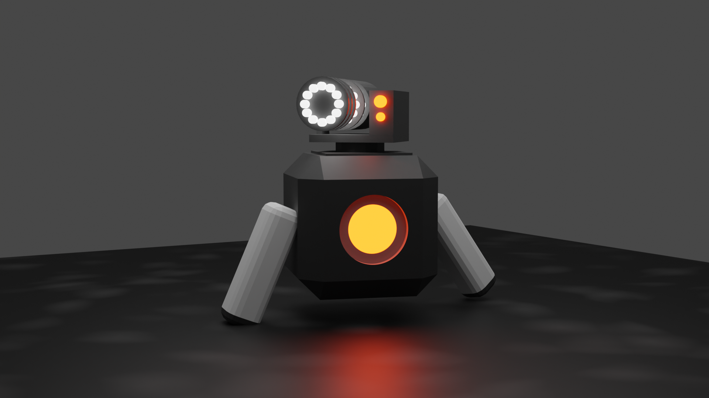
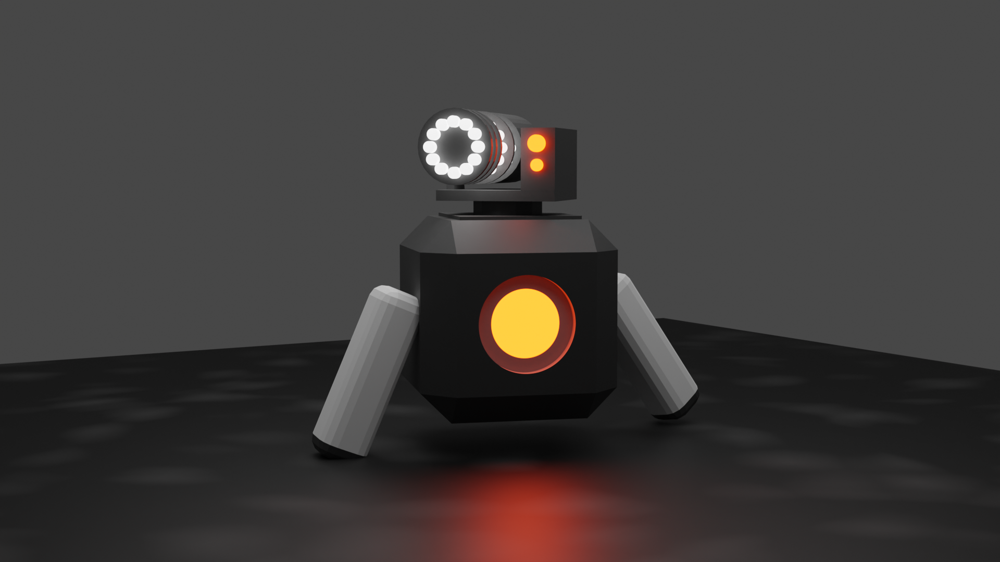

Dutch Rose Media is een bedrijf dat zich bezig houd met Augmented reality en Virtual reality (ook wel AR en VR genoemd) applicaties. Deze AR en VR applicaties worden gemaakt voor verschillende doeleinden. Hierbij is te denken aan educatieve doeleinden, zoals een spel voor Veilig Verkeer Nederland waar de gevaren van dode hoek wordt geleerd. Maar er worden ook applicaties gemaakt voor entertainment doeleinden, zoals een fotospeurtocht in Madurodam met allerlei minigames erin verwerkt.
Het is een klein bedrijf dat 10 mensen telt. Iedereen heeft zijn eigen taak binnen het bedrijf. Je hebt Developers die zorgen dat alle content omgezet word naar een applicatie. De Designers zorgen ervoor dat de content word aangeleverd aan de Developers ook bedenken ze wat waar gaat komen. Tenslotte heb je het management, zij zorgen ervoor dat er klanten binnen komen.
Dutch Rose Media maakt deze applicaties alleen voor partijen die hun ervaringen digitaal willen brengen aan hun klanten.

Binnen dit bedrijf heb ben ik een software developer, Ik help mee met het maken van de code voor applicaties. Tijdens deze stage help ik niet heel veel mee met opdrachten voor klanten aangezien dit een oriënterende stage is. Voor mij is dit nu het perfecte moment om uit te zoeken wat ik leuk vind om te doen binnen het gebied zodat ik later beter weet wat ik wil gaan doen.
Op dit moment probeer ik zoveel mogelijk verschillende dingen te doen zoals Unity, Ar, Unreal, Nreal en Blender. Als ik wil beginnen met een nieuwe opdracht dan ga ik samen met mijn stagebegeleider zitten om te kijken wat ik nu het beste kan doen of kan uitproberen zodat ik aan het einde van mijn stage zo veel mogelijk dingen heb uitgeprobeerd. Af en toe komen er nog wat kleine opdrachtjes van andere collega's waar ik graag even bij mee help zoals iets in blender maken of helpen met computer schermen opzetten.
Als ik klaar ben met mijn opdracht dan geef ik het project af aan andere developers of aan een van mijn collega's waar voor ik het gemaakt heb. Zij kijken dan over mijn code en werk heen om te controlleren of alles er goed uit ziet. Daarna word er een afspraak gemaakt met de klant om al het werk te laten zien of zo mogelijk alles te installeren.
Tijdens mijn eerste stage gesprek zijn we er samen uit gekomen dat ik geen vaste opdracht heb en ik eigenlijk van zo’n veel mogelijk verschillende dingen kennis maak. Na deze stage is dat goed gelukt. Ik heb gewerkt met Unity, AR packages, Nreal Glasses, Blender, Volumetrics en UnrealEngine.
Mijn POP is wel een beetje veranderd, dit kom omdat ik nu heel veel heb kunnen doen. Hierdoor heb ik een veel beter idee van wat er allemaal is en wat ik wel of niet leuk vind. Mijn communicatie is veel beter geworden met groep projecten tijdens mijn stage. Dus veel is behaald van mijn POP. Ik ben er ook achter gekomen dat ik sommige dingen echt niks vind zoals UnrealEngine . Unreal Engine is zoveel anders als alle andere gameEngines die ik uitgeprobeerd heb plus het is een heel zwaar programma voor mijn laptop om te draaien.
Ik denk persoonlijk dat mijn planning skills nog verbeterd kan worden aangezien ik tijdens deze stage niet super veel heb hoeven plannen. Ook ben ik nog erg beginnend met blender en wil daar graag beter in worden en meer over gaan leren in mijn vrijetijd.
Verder ben ik erachter gekomen dat ik Unity en de AR packages hier erg snel heb opgepakt. Ik heb daar veel in geleerd en veel plezier mee gehad.
Ik weet nu hoe ik objecten in de echte wereld kan plaatsen met de AR packages. Ik weet nu hoe ik moet programmeren met AR functies. Ook heb ik geleerd dat ik snel een project kan opzetten en alle packages kan installeren. Ik weet welke soorten functies er allemaal zijn binnen AR en wat er allemaal kan gebeuren.
Dit is het eerste project waar ik aan mee heb mogen helpen.
Ik kreeg de opdracht om een IPad Pro een fysieke maquette te laten scannen en ervoor te zorgen dat er een 3d overlay over de maquette komt die interactief is voor mensen. Hiervoor heb ik een manier genaamt AR worldmapping gebruikt. Na heel wat testen en scannen ben ik erachter gekomen dat het licht heel veel invloed heeft op het vinden van alle juiste Anchor punten.
AR Worldmapping maakt als het ware herkenningspunten, die kan je opslaan in een .worldmap file en later gebruiken om te kijken of de tablet op dezelfde locatie is. Op deze manier heb ik het 3d model elke keer over de fysieke maquette gekregen.
Toen ik dit gemaakt had was het de tijd om het te gaan afleveren aan de klant in Maastricht. Ik heb het samen met mijn collega's daar in het museum mogen installeren. Het had ons de hele dag gekost maar uiteindelijk werkte het.
Ik heb voor deze opdracht maar een manier gebruikt voor de 3d overlay. Nu ik er op terug kijk weet ik dat ik meerdere manieren voor dezelfde oplossing had mogen onderzoeken.
Maar voor mijn eerste opdracht voor een klant vind ik het niet verkeerd.
Dit is mijn eerste opdracht die ik samen met een andere stagiair heb mogen maken.
De vraag was of ik met dezelfde software die ik gebruikt had voor maquette Maastricht een tour kon maken voor onze grote maquette van Strijp-s. Voor deze opdracht hebben we iedere week samen gezeten en vergaderd om te kijken hoe het allemaal gaat met de app.
Ik heb dus weer Ar Worldmapping gebruikt net zoals bij maquette Maastricht. De andere stagiair heeft alle informatie gemaakt en meegeholpen met sommige 3d modellen. Ik heb ervoor gezorgd dat de hele app samen komt en alles werkt. Ook heb ik alle code zelf geschreven en de meeste 3d modellen zelf gemaakt.
We hadden de app optijd af voor de DDW. In het filmpje hiernaast kan je de volledige ervaring beleven.

Ik heb veel complimenten gekregen voor deze opdracht. Er werd gezegd dat dit het beste was van wat wij hadden tijdens de ddw.
Tijdens dit project heb ik geleerd wat alle stappen zijn om van niks naar een eind product te gaan. Ook heb ik geleerd hoe belangrijk het is om alles te laten testen en om feedback te vragen.
De Nreal Glasses is een Augmented reality bril waar je beeld in de echte wereld kan projecteren. Ik koos ervoor om hier een klein project mee te starten om mijn ervaringen uit te breiden.
Ik heb hulp gekregen met de installatie van alle SDK files voor Unity en daarna heb ik zelf zoveel mogelijk uitgezocht. Uiteindelijk heb ik hier 2 kleine projecten mee gemaakt. Een van die projecten kan je hiernaast bekijken en het andere projectje is gebruikt voor klanten die langs kwamen voor de 4DR Studio. Daarvoor heb ik een volumetric via de bril op een plaat gekregen zodat ze er om heen konden lopen.
Dit project is gemaakt in Unity. Via het filmpje heb je wat beeld van hoe het eruit ziet als je de bril op hebt. je hebt allemaal verschillende objecten die je op een plaat kan leggen. en als je op de knop klikt dan komt het object tot leven en gaat door de ruimte bewegen. Helaas heb ik hier een beelden van aangezien ik geen recording kan maken via de bril.
Dit is het eerste project waar ik aan gewerkt heb met heel weinig documentatie online. Hierdoor heb ik zelf moeten onderzoeken en moeten testen, dat heeft ervoor gezorgd dat dit project erg moeilijk was en veel tijd heeft gekost.
Ook heb ik dus geleerd om informatie op te zoeken van een onderwerp dat niet echt veel gebruikt word.
Tijdens mijn stage heb ik natuurlijk ook in mijn vrijetijd gewerkt aan een project en dat is dit. Ik heb een FPS (First Person Shooter) gemaakt. Ik ben erg trots op dit project met de tijd die ik gehad heb. Ik heb alleen de controls gemaakt voor het spel tot nu toe. Dus het lopen, schieten, bukken, Sliden en grapplen. Ook ben ik begonnen met het maken van de vijanden van het spel. Alles wat je ziet heb ik zelf geprogrammeerd of zelf gemodeld.
Ik heb hier zelf een paar weekenden aan gewerkt. En als ik er nog tijd voor heb later zou ik er graag aan willen werken.


 

Tijdens dit project heb ik veel van wiskunde moeten leren om alle berekeningen te moeten maken. Dat is ook vooral wat ik van dit project geleerd heb.
Ik wilde graag Unity’s nieuwe render engine uitproberen en kijken wat ik ermee kon maken. De High definition render pipeline oftewel HDRP is een zware engine die real time heel veel dingen kan renderen. De engine is nog niet zo goed als Unreal Engine 5 maar je kan er alsnog heel veel mee.
Ik heb geprobeerd om een omgeving te maken waar ik een Volumetric in heb gezet. Zoals je kan zien in de foto’s en filmpjes hiernaast. Uiteindelijk mocht ik ook testen of deze render engine beter was om onze volumetrics te renderen want deze engine zorgt voor betere belichting en schaduwen.
Er is uitgekomen dat deze render engine beter is om onze volumetrics te gebruiken maar er moeten wel de juiste licht instellingen voor worden gebruikt. Daar gaat veel tijd inzitten om het perfect te krijgen. Ook moet er gekeken worden of de computer het aan zou kunnen omdat deze render engine best veel van de computer vraagt.
Ik heb nu de basics van de nieuwe Render Pipeline geleerd en kan deze kennis voor eigen of voor school projecten gebruiken.Ik heb hiermee ook mijn POP verder behaald omdat ik meer van Unity wou gaan leren.
Hier zijn een paar ScreenShots van mijn korte projecten die ik in blender heb gemaakt.
Tijdens mijn stage bezoek hebben we het over mijn opdrachten gehad en over hoe het mij gaat binnen dit bedrijf. Ik heb een van mijn projecten laten zien die ik voor de Dutch Design Week heb gemaakt. Mijn stagebegeleider zei dat dat het beste project van de Dutch Design Week was die ze hadden dat jaar. Ook zei hij dat hij soms vergat dat ik op MBO zit en niet op Hbo, omdat ik wel de kennis heb om op Hbo te zitten. Mijn docent zei hetzelfde over hoe ik me gedraag op school. We hadden het erover wat we allemaal gaan doen als ik weer terug kom op school. Ik ga met andere studenten kijken naar Hbo studies voor na het Sint Lucas.
We hebben het erover gehad hoe ik het allemaal doe tijdens mijn stage. Mijn stagebegeleider zegt dat ik teveel zelf wilt doen en niet veel feedback vraag. Zo kunnen andere niet heel veel helpen met mijn code en mijn werk.
FEEDBACK Mathijs
Ik vond het een hele leuke stage bij Dutch Rose Media. Omdat ik van alles mocht doen en uitzoeken heb ik van alles een beetje geleerd en gekeken of ik het leuk vind om er in de toekomst verder mee te gaan. Zo heb ik alles uit mijn POP kunnen uitvoeren en doen. Ook kan ik nu dingen weg strepen zoals UnrealEngine en Java. Het leukste wat ik gedaan heb was werken met AR in Unity. Daar heb ik het meeste van geleerd. Ik wil iedereen van DutchRose bedanken voor deze leuke tijd.